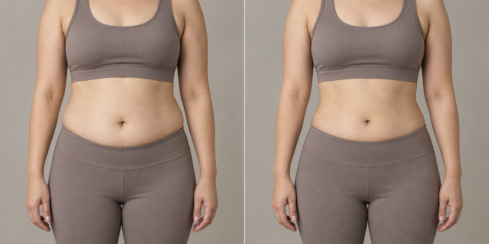
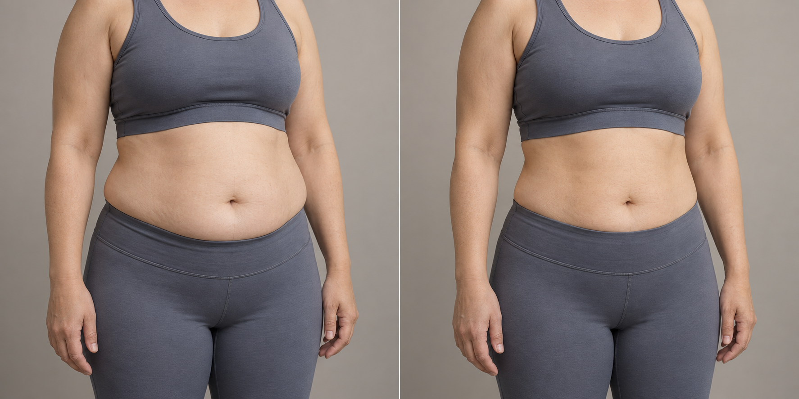
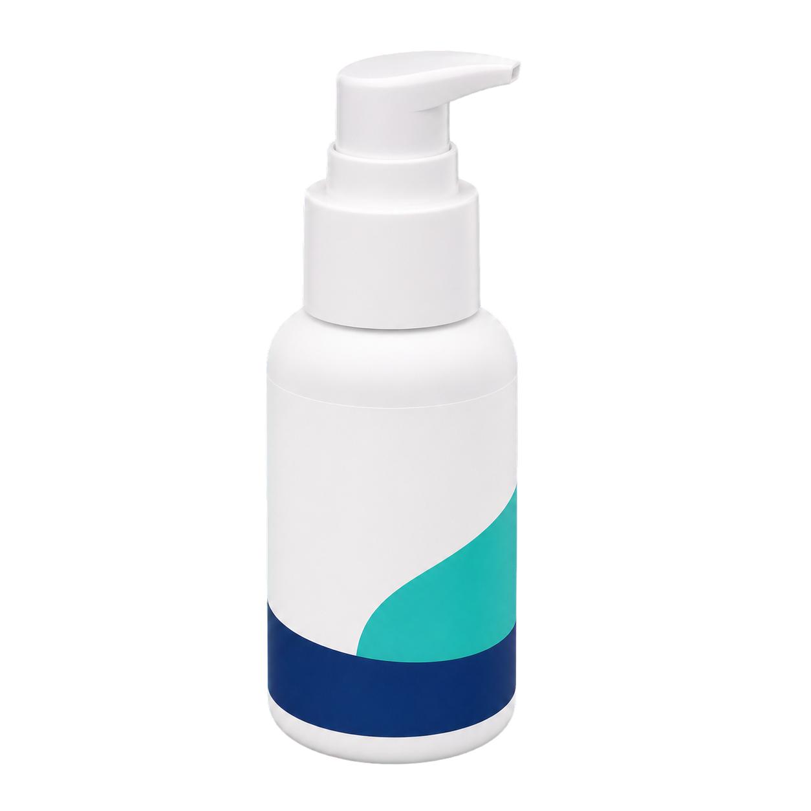
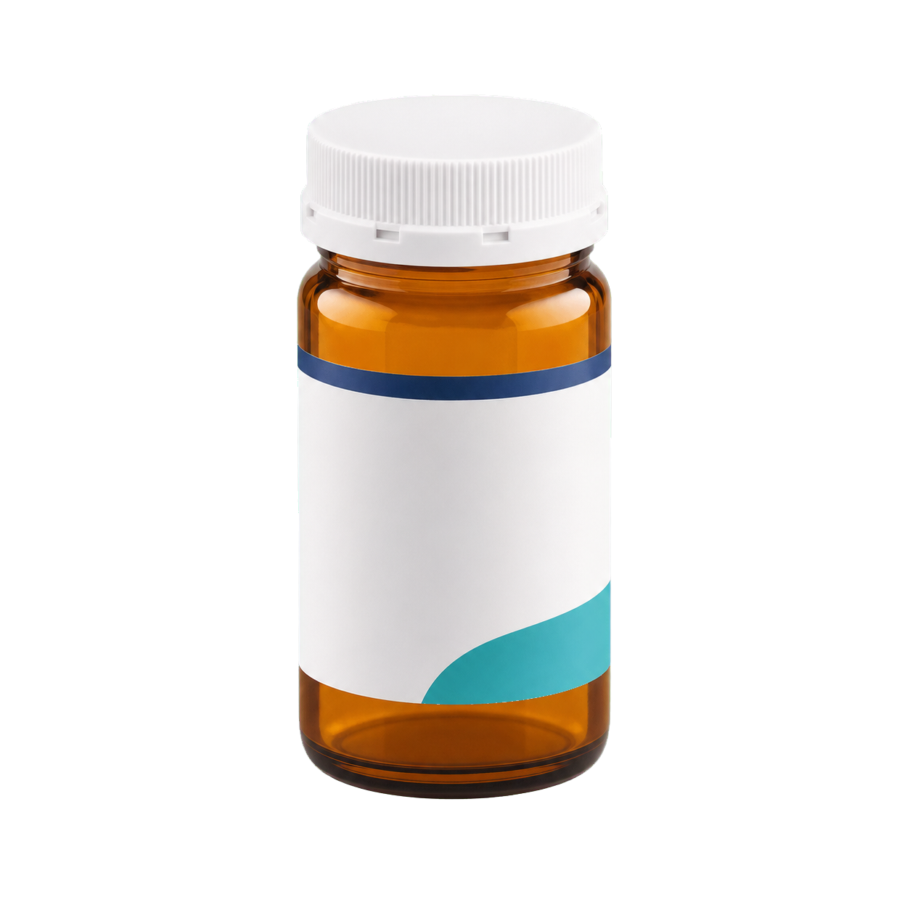
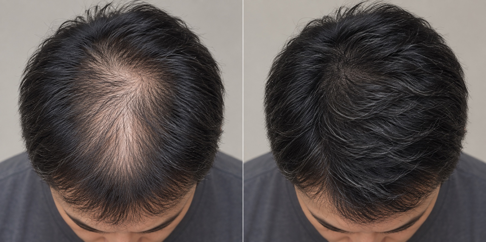
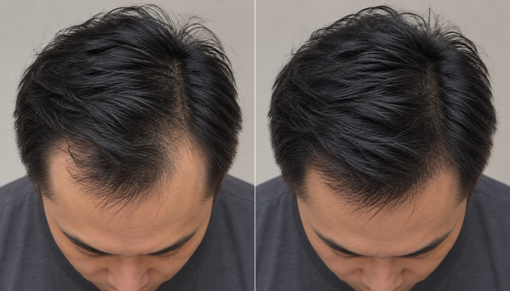
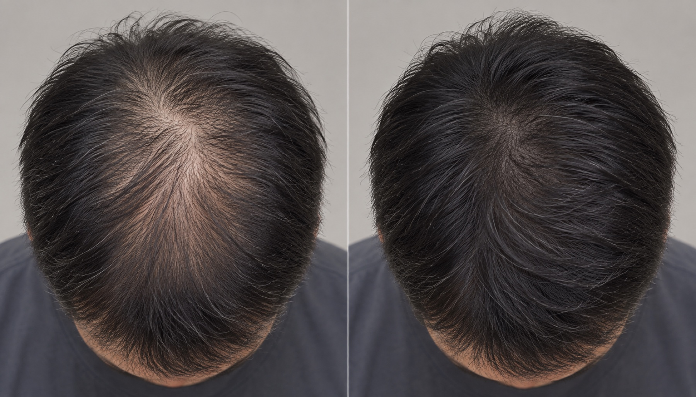

1
ตอบแบบประเมิน
เลือกเรื่องที่กังวลและตอบคำถามสุขภาพเบื้องต้น ใช้เวลาเพียง 1–2 นาที
ปรึกษาแพทย์ทางไกล พร้อมรับยาตามใบสั่งแพทย์
ส่งตรงถึงบ้าน
*แนวทางการรักษาและตัวเลือกยาขึ้นอยู่กับการประเมินของแพทย์
ออนไลน์ 100%
จัดการน้ำหนัก
รายชื่อยาตามแพทย์พิจารณา
*ตัวเลือกยาและแผนการดูแลขึ้นอยู่กับการประเมินของแพทย์ ไม่ใช่ทุกตัวเลือกจะเหมาะกับทุกคน
เสียงจากผู้รับการดูแล
“พอมีแพทย์ช่วยดูแลเรื่องความอยากอาหารและติดตามผล แผนลดน้ำหนักก็ชัดเจนขึ้น”
คุณ พ., 36 ปีติดตามผลต่อเนื่อง
“ปรึกษาออนไลน์สะดวก ไม่ต้องเดินทาง และคุยเรื่องน้ำหนักกับแพทย์ได้แบบเป็นส่วนตัว”
คุณ ม., 41 ปีปรึกษาออนไลน์
“การติดตามเป็นระยะช่วยให้รู้ว่าควรปรับพฤติกรรมตรงไหน เพื่อให้ทำต่อได้จริง”
คุณ อ., 33 ปีปรับพฤติกรรม
“ชอบที่แผนเริ่มจากสุขภาพของเรา ไม่ได้ใช้สูตรเดียวกันกับทุกคน”
คุณ น., 38 ปีแผนเฉพาะบุคคล
ผลลัพธ์จากการติดตาม


น้ำหนัก · ติดตามผลตามระยะเวลาที่แพทย์แนะนำ
*ผลลัพธ์และความเหมาะสมของการรักษาแตกต่างกันในแต่ละบุคคล
สุขภาพเส้นผม
ผลิตภัณฑ์สำหรับดูแลผมร่วง
รายชื่อยาตามแพทย์พิจารณา
ลดฮอร์โมน DHT ซึ่งเป็นสาเหตุของผมร่วงตามพันธุกรรม
Finasteride 1 mg · 30 tablets
 ดูรายละเอียด
ดูรายละเอียด
ฟินาสเตอไรด์ทางเลือก ออกฤทธิ์แบบเดียวกับสูตรต้นแบบ
Finasteride 1 mg · 30 tablets
สูตรต้นแบบของฟินาสเตอไรด์สำหรับผมร่วงในผู้ชาย
Finasteride 1 mg · 30 tablets
ไมนอกซิดิลชนิดรับประทาน สำหรับผู้ที่ไม่สะดวกใช้ยาทา
Minoxidil 5 mg · 100 tablets
 ดูรายละเอียด
ดูรายละเอียด
ยาทาเฉพาะจุด ช่วยกระตุ้นการไหลเวียนที่หนังศีรษะ
Minoxidil topical solution · 30 mL

ดูรายละเอียดโลชั่นไมนอกซิดิล เนื้อบางเบา ใช้ได้ทุกวัน
Minoxidil scalp lotion · 60 mL

ดูรายละเอียด*ยาและขนาดยาที่เหมาะสมขึ้นอยู่กับการประเมินและคำสั่งของแพทย์
เสียงจากผู้รับการดูแล
“พอรู้สาเหตุที่เป็นไปได้ ก็เลิกลองผลิตภัณฑ์ไปเรื่อยและเริ่มดูแลอย่างมีแผน”
คุณ ต., 34 ปีประเมินผมร่วง
“การถ่ายรูปจากมุมเดิมช่วยให้เห็นความเปลี่ยนแปลงชัดกว่าการส่องกระจกทุกวัน”
“มีแพทย์ช่วยทบทวนแผน ทำให้รู้ว่าควรทำต่อหรือปรับตรงไหน”
ผลลัพธ์จากการติดตาม



เส้นผม · ติดตามผลตามระยะเวลาที่แพทย์แนะนำ
*ผลลัพธ์และความเหมาะสมของการรักษาแตกต่างกันในแต่ละบุคคล
สุขภาพผู้ชาย
ทางเลือกที่แพทย์พิจารณาให้เหมาะกับคุณ
ทางเลือกที่แพทย์อาจพิจารณา
*ตัวเลือกยาและแผนการดูแลขึ้นอยู่กับการประเมินของแพทย์
“ตอนแรกไม่กล้าเล่าให้ใครฟัง พอได้คุยกับแพทย์ก็รู้ว่าเป็นเรื่องที่ดูแลได้”
คุณ ก., 39 ปีปรึกษาออนไลน์
“ได้คุยเป็นส่วนตัวจริง ๆ เลยตัดสินใจจากข้อมูลแทนการเดาเอง”
“พอมีการติดตามผล ก็รู้ว่าควรดูแลต่ออย่างไรโดยไม่ต้องลองผิดลองถูก”
*แนวทางการดูแลและตัวเลือกยาขึ้นอยู่กับการประเมินของแพทย์
ดูแลเรื่องของผู้ชายอย่างเป็นส่วนตัว
เริ่มจากการคุยกับแพทย์อย่างเป็นส่วนตัว แล้วค่อยเลือกแนวทางที่เหมาะกับคุณ
เลื่อนเพื่อไปต่อ
เราไม่ใช่แค่คลินิกทั่วไป แต่เราคือ
ที่ออกแบบมาเพื่อคุณ
คลินิกที่ได้รับอนุญาต
ให้บริการแพทย์ทางไกลโดยแพทย์ที่มีใบอนุญาต
ยาแท้ จัดส่งถึงบ้าน
จัดส่งโดยเครือข่ายร้านยาฟาสซิโน พร้อมบรรจุภัณฑ์มิดชิด

คุ้มครองตาม PDPA
ข้อมูลสุขภาพของคุณถูกใช้เพื่อการดูแลตามความยินยอมเท่านั้น

ISO/IEC 27001:2022
มาตรฐานการจัดการความมั่นคงปลอดภัยของข้อมูล

ISO 27018:2019
มาตรฐานการคุ้มครองข้อมูลส่วนบุคคลบนคลาวด์

ISO/IEC 20000-1:2018
มาตรฐานการบริหารจัดการบริการไอที โดย INET
ISO/IEC 27001:2022
มาตรฐานการจัดการความมั่นคงปลอดภัยของข้อมูล
ISO 27018:2019
มาตรฐานการคุ้มครองข้อมูลส่วนบุคคลบนคลาวด์
ISO/IEC 20000-1:2018
มาตรฐานการบริหารจัดการบริการไอที โดย INET
คลินิกที่ได้รับอนุญาต
ให้บริการแพทย์ทางไกลโดยแพทย์ที่มีใบอนุญาต
ยาแท้ จัดส่งถึงบ้าน
จัดส่งโดยเครือข่ายร้านยาฟาสซิโน พร้อมบรรจุภัณฑ์มิดชิด
คุ้มครองตาม PDPA
ข้อมูลสุขภาพของคุณถูกใช้เพื่อการดูแลตามความยินยอมเท่านั้น
ทุกแผนเริ่มจากข้อมูลสุขภาพจริง และอยู่ภายใต้การประเมินของแพทย์ที่มีใบอนุญาต
พบทีมแพทย์ของเรา
ตจวิทยา (ผิวหนัง)
ดูประวัติเต็ม
อายุรศาสตร์ · โรคระบบการหายใจ
ดูประวัติเต็ม พสโภชนศาสตร์คลินิกอายุรศาสตร์ · โภชนศาสตร์คลินิก
ดูประวัติเต็ม ชหศัลยศาสตร์ยูโรวิทยาศัลยศาสตร์ยูโรวิทยา
ดูประวัติเต็ม“ดีมากและบริการดีมาก”คุณ @bright.mind
ใช้เวลาเพียง 5 นาทีในการกรอกแบบประเมินดิจิทัลและเริ่มสนทนาทางการแพทย์โดยตรงกับแพทย์เฉพาะทาง
เริ่ม